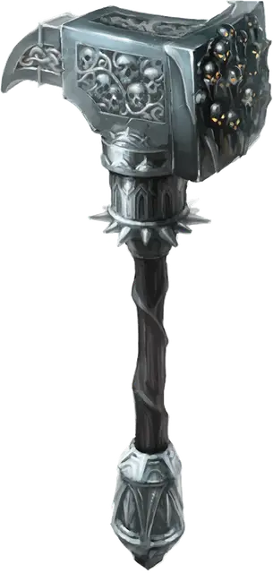

Ползучий молотильщик
Grovelthrash
Оружие (боевой молот), артефакт (требуется настройка)

Созданный из цельного куска обсидиана, этот боевой молот Торога гудит магической энергией и украшен изображениями лиц, кричащих от боли.
Разум. Ползучий молотильщик-это разумное оружие нейтрально злого мировоззрением с Интеллектом 18, Мудростью 15 и Харизмой 19. У него есть нормальный слух и тёмное зрение на расстоянии 120 футов Оружие телепатически общается со своим обладателем и может говорить, читать и понимать Общий, Инфернальный и язык Бездны.
Индивидуальность. Алчный ультролот [ultroloth] по имени Цирия живет в Ползучем молотильщике. Оружие ценит материальные блага и причинение боли. Оно хвалит своего владельца всякий раз, когда тот претендует на сокровище, и получает удовольствие, причиняя боль другим.
Дремлющий. В дремлющем состоянии боевой молот предоставляет следующие преимущества:
- Вы можете говорить, читать и писать на Инфернальном и языке Бездны.
- Вы получаете бонус +1 к броскам атаки и урона, совершённым этим магическим оружием. Когда вы попадаете атакой с помощью этого боевого молота, вы можете дополнительно нанести 2к6 дробящего урона по цели. Если вы это делаете, вы получаете 1к6 урона психической энергией. Боевой молот наносит двойной урон по объектам и сооружениям.
- Держа это оружие, вы получаете преимущество на проверки Мудрости (Проницательность), совершаемых для распознавания лжи, произнесенной на известном вам языке.
Пробуждённый. Когда боевой молот достигает пробуждённого состояния, он приобретает следующие свойства:
- Бонус оружия к броскам атаки и урона увеличивается до +2.
- Вы получаете скорость копания, равную вашей скорости ходьбы. Вы можете использовать свою скорость копания, чтобы перемещаться через песок, рыхлую землю, грязь или лёд, а не в твердой породе.
- Когда существо, которое вы видите в пределах 30 футов от вас, попадает по вам атакой, пока вы держите боевой молот, вы можете использовать свою Реакцию, чтобы нанести этому существу количество урона психической энергией, равное урону, который вы получили от его атаки. Это свойство не может быть использовано снова до следующего рассвета.
Возвышенный. Когда боевой молот достигает возвышенного состояния, он приобретает следующие свойства:
- Бонус оружия к броскам атаки и урона увеличивается до +3.
- Когда ваши хиты опускаются больше половины вашего максимума хитов, боевой молот начинает наносить при ударе дополнительно 2к6 урона. Вы можете прокапывать твердую породу на половину своей скорости и оставлять за собой туннель диаметром 5 футов
- Действием вы можете использовать боевой молот, чтобы наложить с его помощью одно из следующих заклинаний (Сл спасброска 17): землетрясение [earthquake], слияние с камнем [meld into stone] или изменение формы камня [stone shape]. После того, как заклинание было наложено с помощью боевого молота, оно не может быть наложено подобным образом до следующего рассвета.
Свойства артефакта Предателя
Оружие Предателей набирает силу точно так же, как и Отголоски Дивергенции. В Дремлющем состоянии каждый из этих артефактов обладает одним малым положительным свойством и одним малым отрицательным свойством. Когда артефакт достигает Пробуждённого состояния, он приобретает дополнительное малое положительное свойство и малое отрицательное свойство. Когда предмет достигает своего Возвышенного состояния, он приобретает основное положительное свойство.